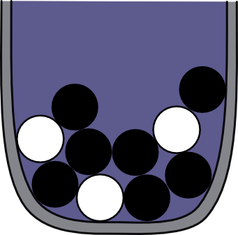
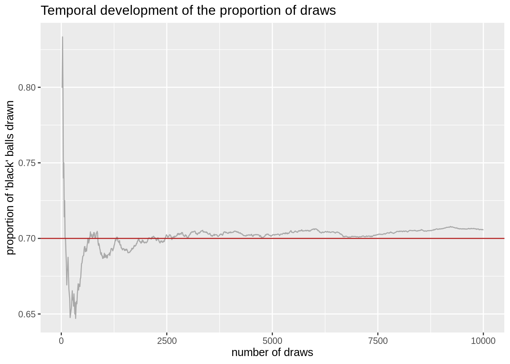

Intuitively put, a probability distribution is a formal construct that captures an agent’s belief state.
In Bayesian data analysis, that agent of interest is the analyst themselves or a hypothetical model of the analyst.
More concretely, a probability distribution assigns numerical values (conveniently scaled to lie between 0 and 1) to a number of different contingencies, i.e., different ways the world could be.
These numbers can be interpreted as the weight of belief (also referred to as “degree of credence” in the philosophical literature) that the agent assigns to each contingency: the higher the number assigned to a contingency, the more likely the agent considers this way the world could be.
7.1.1 Outcomes, events, observations
To define the notion of probability, we first consider the space of relevant contingencies (ways the world could be) \(\Omega\) containing all elementary outcomes\(\omega_1, \omega_2, \dots \in \Omega\) of a process or an event whose execution is (partially) random or unknown.
Elementary outcomes are mutually exclusive (\(\omega_i \neq \omega_j \; \text{for} \,\forall i \neq j\)). The set \(\Omega\) exhausts all possibilities.31
Example. The set of elementary outcomes of a single coin flip is \(\Omega_{\text{coin flip}} = \left \{ \text{heads}, \text{tails} \right \}\). The elementary outcomes of tossing a six-sided die are \(\Omega_{\text{standard die}} = \{\)⚀, ⚁, ⚂, ⚃, ⚄, ⚅ \(\}\).32
An event\(A\) is a subset of \(\Omega\). Think of an event as a (possibly partial)
observation. We might observe, for instance, not the full outcome of tossing a die, but only
that there is a dot in the middle. This would correspond to the event
\(A = \{\) ⚀, ⚂, ⚄ \(\}\),
i.e., observing an odd-numbered outcome. The trivial observation\(A = \Omega\) and the
impossible observation\(A = \emptyset\) are counted as events, too. The latter is included for
technical reasons that we don’t need to know for our purpose.
For any two events \(A, B \subseteq \Omega\), standard set operations correspond to logical
connectives in the usual way. For example, the conjunction \(A \cap B\) is the observation of
both \(A\) and \(B\); the disjunction \(A \cup B\) is the observation that it is either \(A\) or \(B\);
the negation of \(A\), \(\overline{A} = \left \{ \omega \in \Omega \mid \omega \not \in A \right \}\), is the
observation that it is not \(A\).
7.1.2 Probability distributions
A probability distribution\(P\) over \(\Omega\) is a function
\(P \ \colon \ \mathfrak{P}(\Omega) \rightarrow \mathbb{R}\)33 that assigns to all events \(A \subseteq \Omega\) a real number, such that the following (so-called Kolmogorov axioms) are satisfied:
Occasionally, we encounter the notation \(P \in \Delta(\Omega)\) to express that \(P\) is a probability
distribution over \(\Omega\). (E.g., in physics, theoretical economics or game theory. Less so in psychology or statistics.) If \(\omega \in \Omega\) is an elementary event, we often write \(P(\omega)\) as a shorthand for \(P(\left \{ \omega \right \})\). In fact, if \(\Omega\) is finite, it suffices to assign probabilities to elementary outcomes.
A number of rules follow immediately from the definition:
C1. \(P(\emptyset) = 0\)
C2. \(P(\overline{A}) = 1 - P(A)\)
C3. \(P(A \cup B) = P(A) + P(B) - P(A \cap B)\) for any \(A, B \subseteq \Omega\)
Exercise 7.1 [optional]
Prove C1, C2 and C3 using A1, A2 and A3.
C1: \(P(\Omega \cup \emptyset) = P(\Omega) + P(\emptyset) \Leftrightarrow P(\Omega) = P(\Omega) + P(\emptyset) \Leftrightarrow 0 = P(\emptyset)\) following A3 since \(\Omega\) and \(\emptyset\) are mutually exclusive.
C3: \(P(A \cup B) = P((A-B) \cup (A \cap B) \cup (B-A)) = P(A-B) + P(A \cap B) + P(B-A) = \\ (P(A \cup B) - P(B)) + P(A \cap B) + (P(A \cup B) - P(A)) = 2 P(A \cup B) - P(A) - P(B) + P(A \cap B) \\ \Leftrightarrow P(A \cup B) = P(A) + P(B) - P(A \cap B)\)
7.1.3 Interpretations of probability
It is reasonably safe to think of probability, as defined above, as a handy mathematical primitive which is useful for certain applications. There are at least three ways of thinking about where this primitive probability might come from:
Frequentist: Probabilities are generalizations of intuitions/facts about frequencies of events in repeated executions of a random event.
Subjectivist: Probabilities are subjective beliefs of a rational agent who is
uncertain about the outcome of a random event.
Realist: Probabilities are the property of an intrinsically random world.
While trying to stay away from philosophical quibbles, we will adopt a subjectivist interpretation of probabilities, but note that frequentist considerations should affect what a rational agent should believe.
7.1.4 Distributions as samples
No matter what your metaphysics of probability are, it is useful to realize that probability distributions can be approximately represented by sampling.
Think of an urn as a container with balls of different colors with different proportions (see Figure 7.1). In the simplest case, there is a number of \(N > 1\) balls of which \(k > 0\) are black and \(N-k > 0\) are white. (There are at least one black and one white ball.) For a single random draw from our urn we have: \(\Omega_{\text{our urn}} = \left \{ \text{white}, \text{black} \right \}\). We now draw from this urn with replacement. That is, we shake the urn, draw one ball, observe its color, take note of the color, and put it back into the urn. Each ball has the same chance of being sampled. If we imagine an infinite sequence of single draws from our urn with replacement, the limiting proportion with which we draw a black ball is \(\frac{k}{N}\). This statement about frequency is what motivates saying that the probability of drawing a black ball on a single trial is (or should be35)
\(P(\text{black}) = \frac{k}{N}\).

Figure 7.1: An urn with seven black balls and three white balls. Imagine shaking this container, and then drawing blindly a single ball from it. If every ball has an equal probability of being drawn, what is the probability of drawing a black ball? That would be 0.7.
The plot below shows how the proportion of black balls drawn from an urn like in Figure 7.1 with \(k = 7\) black balls and \(N = 10\) balls in total, gravitates to the probability 0.7 when we keep drawing and drawing.

To sum this up concisely, we have a random process (drawing once from the urn) whose outcome is uncertain, and we convinced ourselves that the probability of an outcome corresponds to the relative frequency it occurs, in the limit of repeatedly executing the random process (i.e., sampling from the urn). From here, it requires only a small step to a crucial but ultimately very liberating realization. If the probability of an event occurring can be approximated by its frequency in a large sample, then we can approximately represent (say: internally in a computer) a probability distribution as one of two things:
a large set of (what is called: representative) samples; or even better as
an oracle (e.g., in the form of a clever algorithm) that quickly returns a representative sample.
This means that, for approximately computing with probability, we can represent distributions through samples or a sample-generating function. We do not need to know precise probability or be able to express them in a mathematical formula. Samples or sampling is often enough to approximate probability distributions.
Exercise 7.2
Explore how taking more or less samples affects the proportion of draws from an urn with the WebPPL code below. You can enter the number of black balls and the total number of balls for your urn. You can also enter the number of times you want to draw from your urn (with replacement - meaning that after every draw, the ball you just picked is placed back into the urn).
You should execute the code several times in sequence with the same parameter values.
This is because each time you run the code, another different random result will be shown.
By inspecting what happens across several runs (each drawing nr_draws times from the urn), you can check the effect of varying the variable nr_draws.
E.g., what happens with a low sample size, e.g., nr_draws = 20, as opposed to a large sample size, e.g., nr_draws = 100000?
// how many balls are black? how many in total?
var nr_black = 7
var nr_total = 10
// how many draws from the urn (with replacement)?
var nr_draws = 20
///fold:
var model = function() {
flip(nr_black/nr_total) == 1 ? "black" : "white"
}
display('Proportion of balls sampled')
Infer({method: "forward", samples : nr_draws}, model)
///
With a small sample size, there is a lot of variation in the observed proportion. As the sample size gets larger and larger, the result converges to nr_black / nr_total.
For simplicity of exposure, we gloss over subtleties arising when dealing with infinite sets \(\Omega\). We make up for this when we define probability density functions for continuous random variables, which have an uncountably infinite number of elementary outcomes. We will usually be concerned with continuous random variables within applied statistics.↩︎
Think of \(\Omega\) as a partition of the space of all possible ways in which the world could be, where we lump together into one partition cell (one elementary outcome) all ways in which the world could be that are equivalent regarding those aspects of reality that we are interested in. We do not care whether the coin lands in the mud or in the sand. It only matters whether it came up heads or tails. Each elementary event can be realized in myriad ways. \(\Omega\) is our, the modelers’, first crude simplification of nature, abstracting away aspects we currently do not care about.↩︎
For any of you who are interested in the precise mathematical description of probability space, \(\mathfrak{P}(\Omega)\) is called Borel set. It is important since probabilities can only be defined for measurable sets.↩︎
A3 is the axiom of countable additivity. Finite additivity may be enough for finite or countable sets \(\Omega\), but infinite additivity is necessary for full generality in the uncountable case.↩︎
If probabilities are subjective beliefs, a rational agent is, in a sense, normatively required to assign exactly this probability.↩︎